02-zabbix安装部署
1.官网
良心官网，文档全的可怕
https://www.zabbix.com/cn/manuals
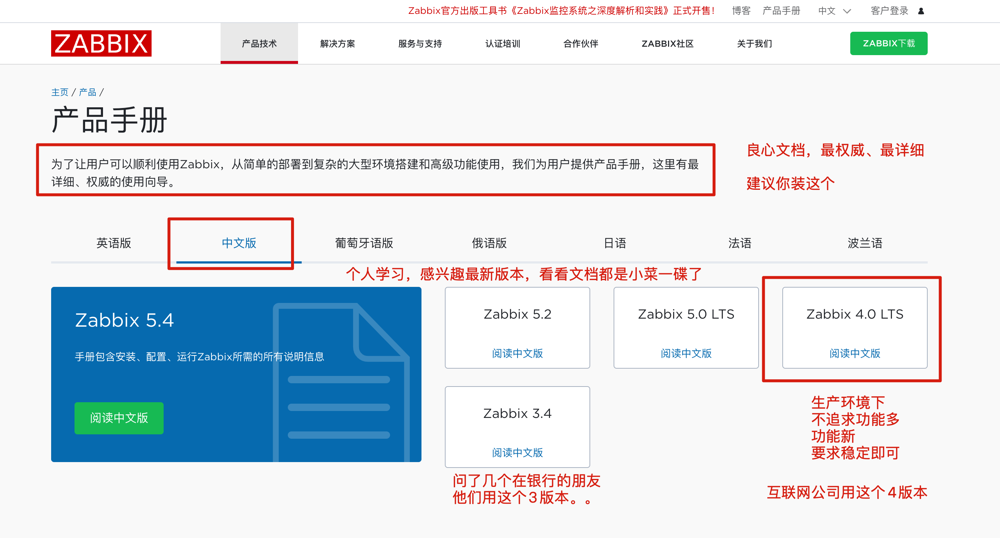
2.先装好zabbix服务端再说
zabbix安装全流程
1.配置yum仓库
https://mirrors.tuna.tsinghua.edu.cn/zabbix/zabbix/
安装
rpm -ivh https://mirrors.tuna.tsinghua.edu.cn/zabbix/zabbix/4.0/rhel/7/x86_64/zabbix-release-4.0-1.el7.noarch.rpm
# 修改repo文件，改为清华源
sed -i 's#repo.zabbix.com#mirrors.tuna.tsinghua.edu.cn/zabbix#g' /etc/yum.repos.d/zabbix.repo
2.安装zabbix服务端（前端）、zabbix连接数据库、zabbix-agent（客户端）
yum install -y zabbix-server-mysql zabbix-web-mysql zabbix-agent mariadb-server
启动mariadb数据库，设置开机自启
systemctl start mariadb && systemctl enable mariadb
3.设置mariadb数据库，创建zabbix库，存储监控数据，且创建账号
mysqladmin password www.yuchaoit.cn
mysql -uroot -pwww.yuchaoit.cn -e 'create database zabbix character set utf8 collate utf8_bin;'
mysql -uroot -pwww.yuchaoit.cn -e "grant all privileges on zabbix.* to zabbix@localhost identified by 'www.yuchaoit.cn';"
测试zabbix用户
[root@zabbix4-server ~]#mysql -uzabbix -pwww.yuchaoit.cn -e "show databases;"
+--------------------+
| Database |
+--------------------+
| information_schema |
| test |
| zabbix |
+--------------------+
4.导入zabbix的数据库
[root@zabbix4-server ~]#zcat /usr/share/doc/zabbix-server-mysql-4.0.41/create.sql.gz | mysql -uroot -pwww.yuchaoit.cn zabbix
5.编辑zabbix服务端配置文件（修改数据库部分即可）
[root@zabbix4-server ~]#grep "^[a-Z]" /etc/zabbix/zabbix_server.conf
LogFile=/var/log/zabbix/zabbix_server.log
LogFileSize=0
PidFile=/var/run/zabbix/zabbix_server.pid
SocketDir=/var/run/zabbix
DBHost=localhost
DBName=zabbix
DBUser=zabbix
DBPassword=www.yuchaoit.cn
SNMPTrapperFile=/var/log/snmptrap/snmptrap.log
Timeout=4
AlertScriptsPath=/usr/lib/zabbix/alertscripts
ExternalScripts=/usr/lib/zabbix/externalscripts
LogSlowQueries=3000
6.启动zabbix服务端，且开机自启
systemctl start zabbix-server && systemctl enable zabbix-server
7.检查zabbix
[root@zabbix4-server ~]#ps -ef|grep zabbix
[root@zabbix4-server ~]#netstat -tunlp|grep zabbix
tcp 0 0 0.0.0.0:10051 0.0.0.0:* LISTEN 3125/zabbix_server
tcp6 0 0 :::10051 :::* LISTEN 3125/zabbix_server
apache配置
1.修改时区
[root@zabbix4-server /tmp]#grep -in 'shanghai' /etc/httpd/conf.d/zabbix.conf
20: php_value date.timezone Asia/Shanghai
2.重启
systemctl restart httpd
3.访问zabbix前端安装界面
直接访问对于服务器的80端口的apache服务，已经和zabbix结合了，其实就是一个LAMP架构了而已。
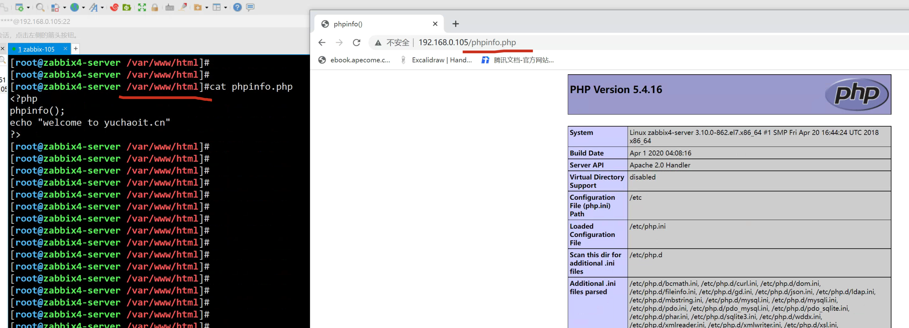
删除这个测试文件，然后开始安装你的zabbix吧。
[root@zabbix4-server /var/www/html]#rm -f phpinfo.php
补充知识，关于apache和zabbix是怎么结合的？
# 看apache配置文件就行了，你可以访问zabbix路由即可，apache自动加载php模块，解析请求
[root@zabbix4-server /var/www/html]#cat /etc/httpd/conf.d/zabbix.conf
#
# Zabbix monitoring system php web frontend
#
Alias /zabbix /usr/share/zabbix
<Directory "/usr/share/zabbix">
Options FollowSymLinks
AllowOverride None
Require all granted
<IfModule mod_php5.c>
php_value max_execution_time 300
php_value memory_limit 128M
php_value post_max_size 16M
php_value upload_max_filesize 2M
php_value max_input_time 300
php_value max_input_vars 10000
php_value always_populate_raw_post_data -1
php_value date.timezone Asia/Shanghai
</IfModule>
</Directory>
<Directory "/usr/share/zabbix/conf">
Require all denied
</Directory>
<Directory "/usr/share/zabbix/app">
Require all denied
</Directory>
<Directory "/usr/share/zabbix/include">
Require all denied
</Directory>
<Directory "/usr/share/zabbix/local">
Require all denied
</Directory>
1.访问zabbix入口
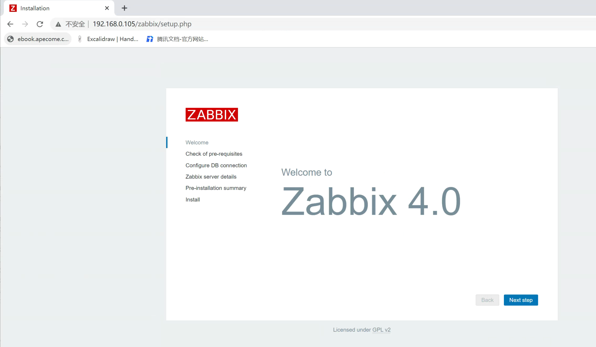
2.体检，安装环境检查
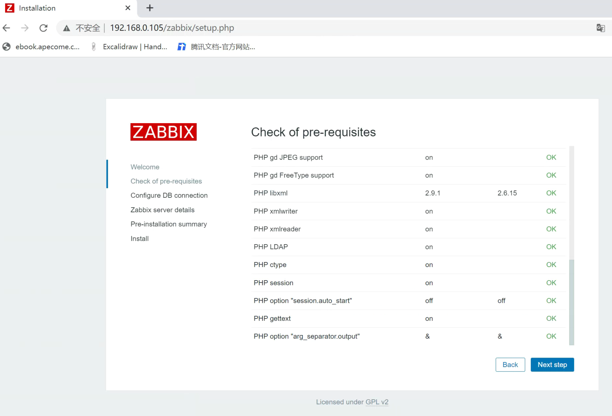
3.配置数据库连接
根据你自己的数据库信息，填写即可
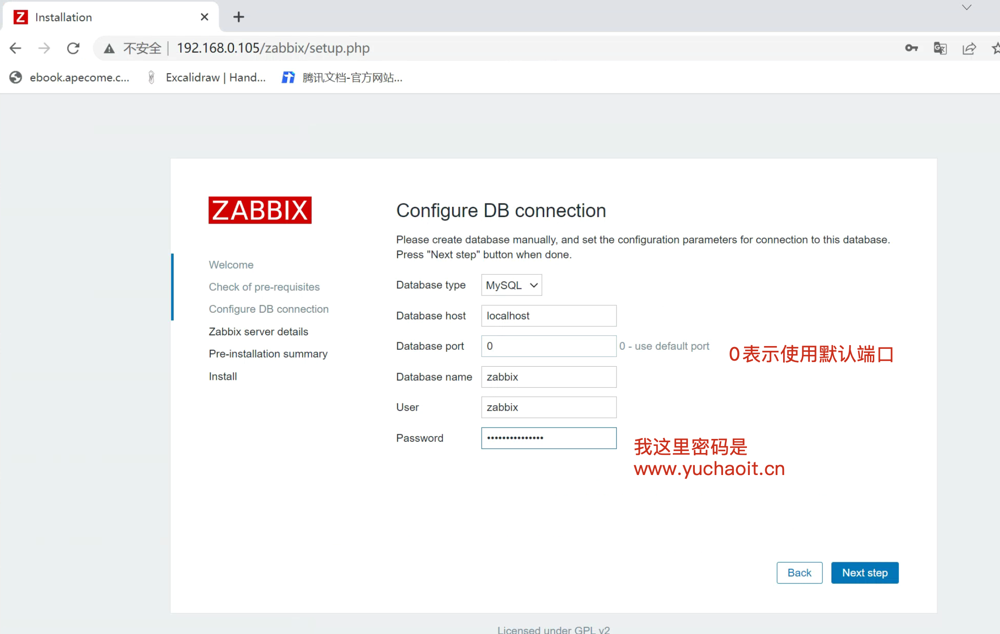
4.配置zabbix服务端的主机端口信息
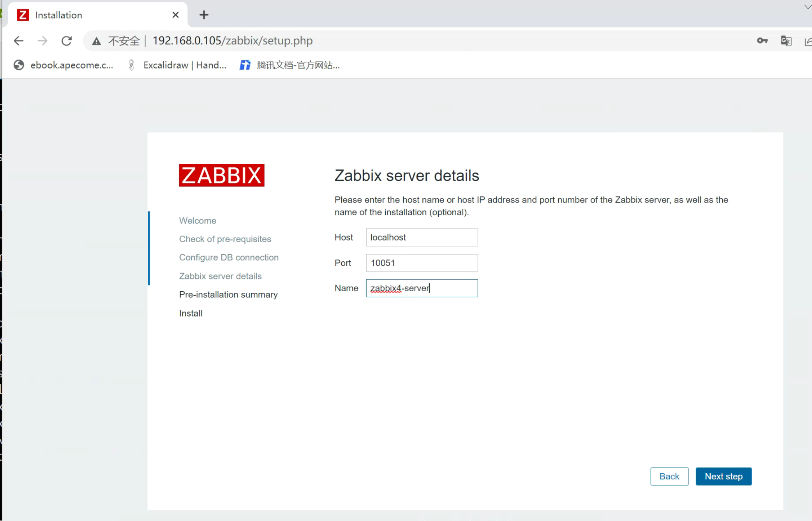
5.最终确认
安装前的细节检查
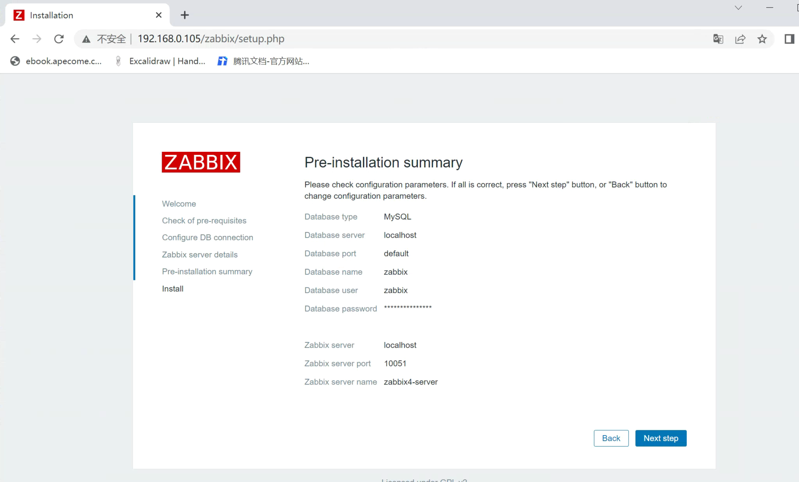
6.恭喜你安装成功
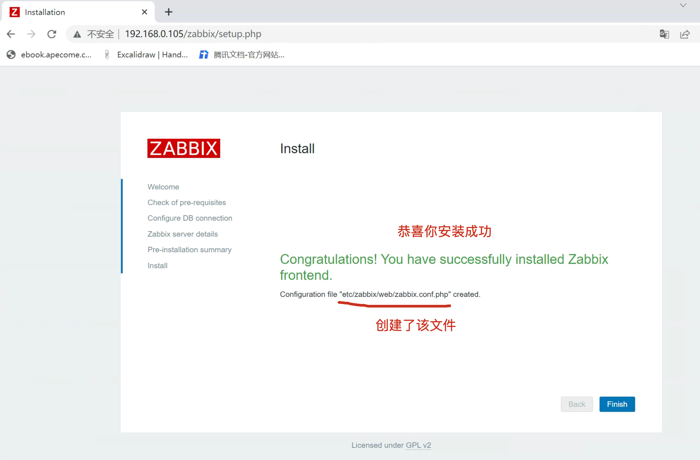
7.登录zabbix
默认登录账号
Admin
密码
zabbix
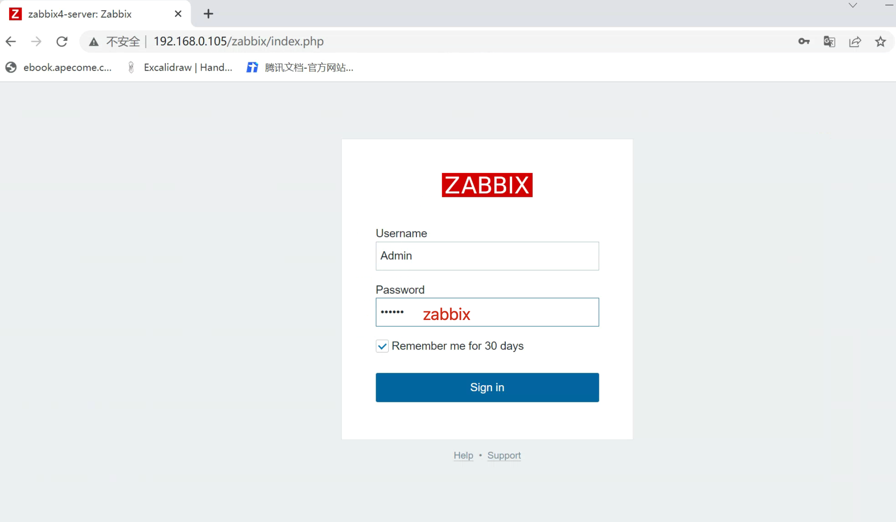
8.zabbix首页
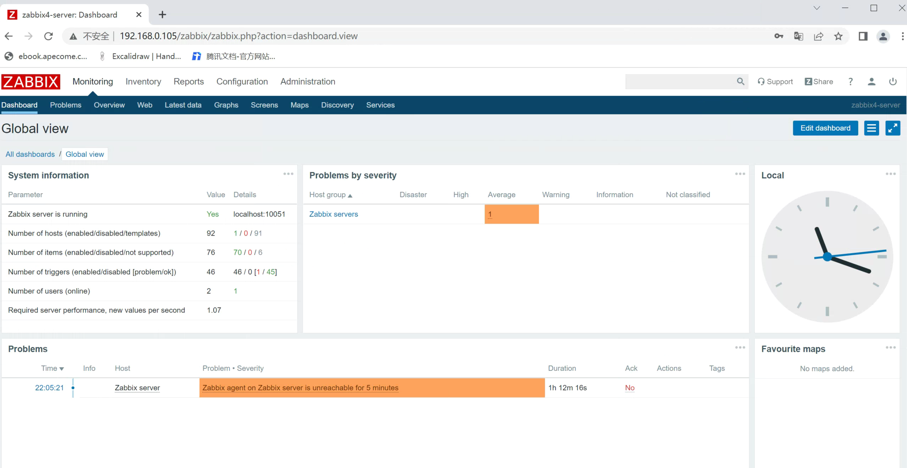
9.修改语言为中文
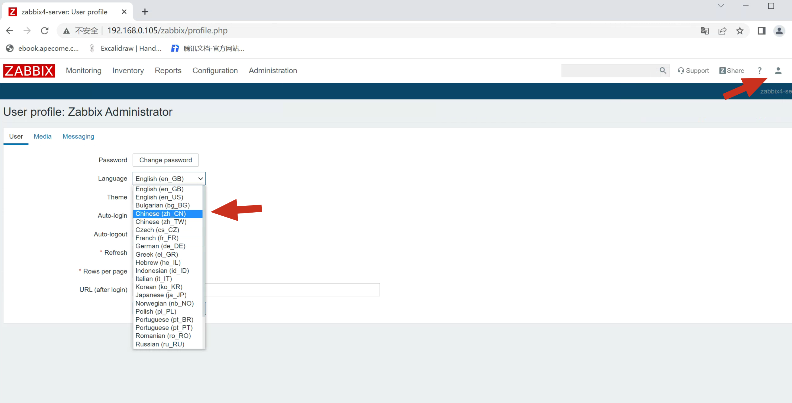
还是中文看着舒服呀
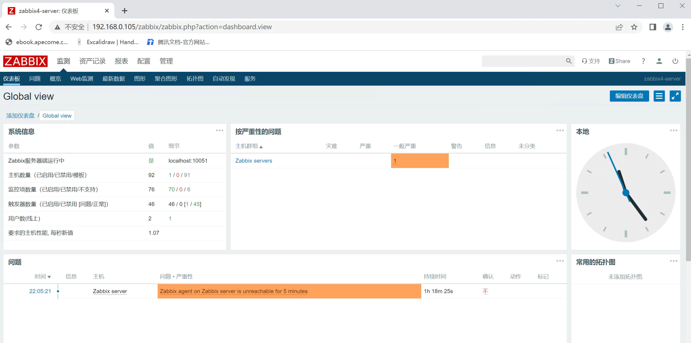
10.修复中文乱码
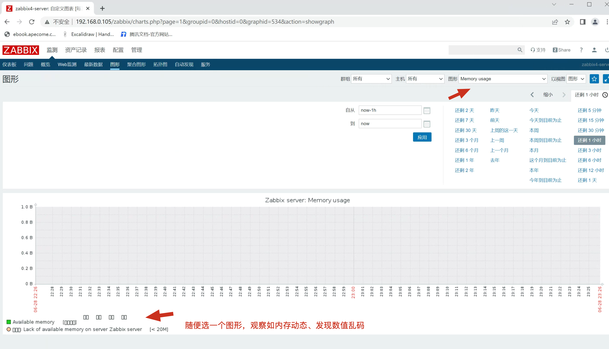
解决办法，这是因为缺少zabbix所需的字体
# 文泉仪微黑字体
[root@zabbix4-server ~]#yum install wqy-microhei-fonts -y
# 拷贝字体给zabbix用，覆盖图形字体
[root@zabbix4-server ~]#cp /usr/share/fonts/wqy-microhei/wqy-microhei.ttc /usr/share/zabbix/assets/fonts/graphfont.ttf
cp: overwrite ‘/usr/share/zabbix/assets/fonts/graphfont.ttf’? y
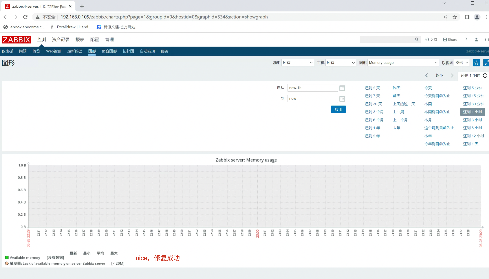
4.zabbix功能特点
zabbix是一款超过23年经验的监控王牌软件
- 数据采集
- 支持SNMP、JMX、等采集数据协议
- 支持自定义时间频率采集数据
- 支持server、proxy、agent的方式采集数据
- 灵活定义触发器
- 支持自定义触发条件
- 将触发器和告警方式关联
多种告警方式
- 短信、邮件、微信
- 告警分等级、一般、警告、紧急
- 支持自定义警告内容。
可视化展示丰富
- 内置图形功能可以将采集的数据实时绘制成图形
- 使用图形聚合功能可以汇总多个监控项图形、集中展示
- 提高报表分析功能
- 存储历史数据
- 采集到的数据存储入库，便于长久管理，查看历史记录
- 配置简单上手
- 配置文件简单，文档丰富，参数易懂
- 一般添加主机、关联模板两部曲即可完成主机监控
- 大量的监控模板
- zabbix-agent支持大量的监控项且被制作成了模板，方便复用
美观的UI页面
- 基于php开发的zabbix-ui，大部分操作通过页面点击完成。
二次开发能力
- 提供zabbix API可编程接口，进行批量数据操作，以及第三方工具集成。
多平台扩展
- 支持linux、windows
- 由C语言开发的server、agent、性能强悍。
4.1 Zabbix 架构组成
Zabbix 主要有由以下组件组成，功能介绍如下:
Server 服务端
Zabbix Server 是 Zabbix 的核心组件，其功能为将 Agent 采集到的数据持久化 存储到数据库里。
数据库存储
存储所有由 Agent 采集到的数据，Zabbix 支持多种数据存储，例如:
Mysql,Oracle,PostgreSQL,Elasticsearch 等。
Web 界面
Zabbix 提供了友好的 Web 界面方便我们操作，Web 界面的运行环境可以是 Nginx+PHP或者Apache+PHP服务组成。
Web界面也是ZabbixServer的一部分。
Proxy 代理端
对于分布式环境，Zabbix 也提供了代理的方案，可以代替 Zabbie Server 收集 多个 Agent 的数据，然后在将收集到的数据汇总到 Zabbix Server，Proxy 可以 起到分担 Zabbix Server 负载的作用。
Agent 客户端
Zabbix Agent 被部署在需要监控主机上，用于采集监控数据并发送到 Zabbix Server 端。
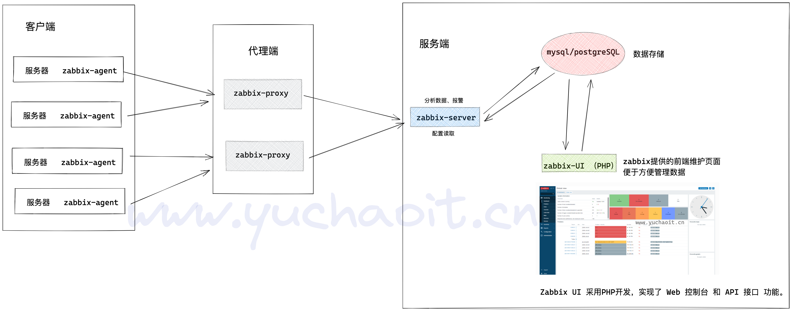